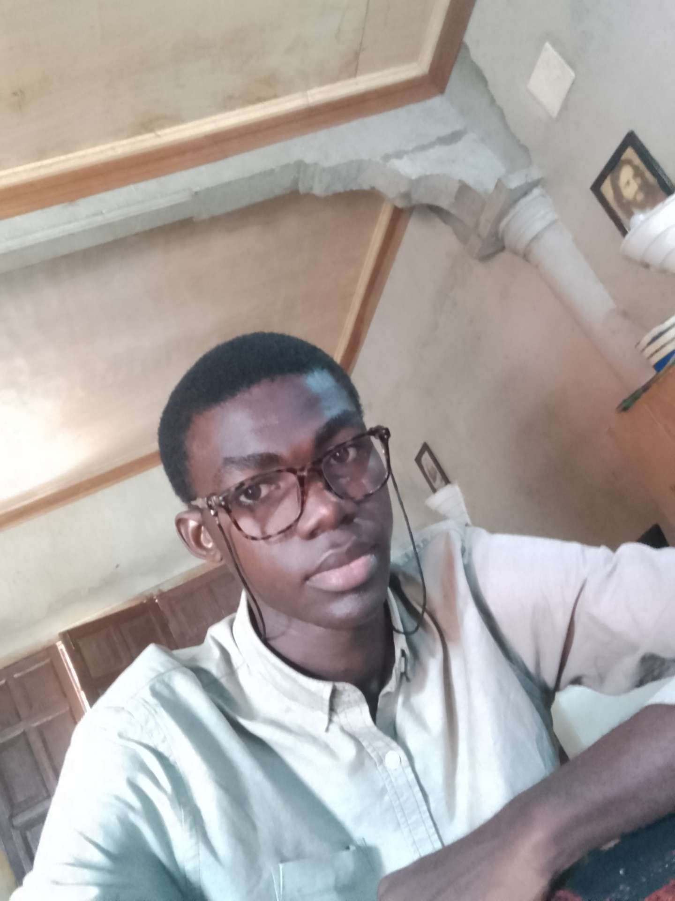

Michel jughy Moubou Awe | WDD 130
Hello! My name is Michel jughy Moubou Awe, I am from the Republic of Congo, Brazzaville. I am currently in line learning web development at BYU IDAHO. I have always been passionate about technology and the internet, and I believe that learning web development will open up many opportunities for me in the future.
In my free time, I enjoy reading tech blogs, experimenting with new coding projects, and exploring the latest trends in web design. I am excited to be part of this course and look forward to learning more about HTML, CSS, JavaScript, and other web development technologies.
My goal is to become a proficient web developer and contribute to creating innovative and user-friendly websites. I am eager to collaborate with my peers and learn from experienced instructors throughout this course.
Thank you for visiting my page!